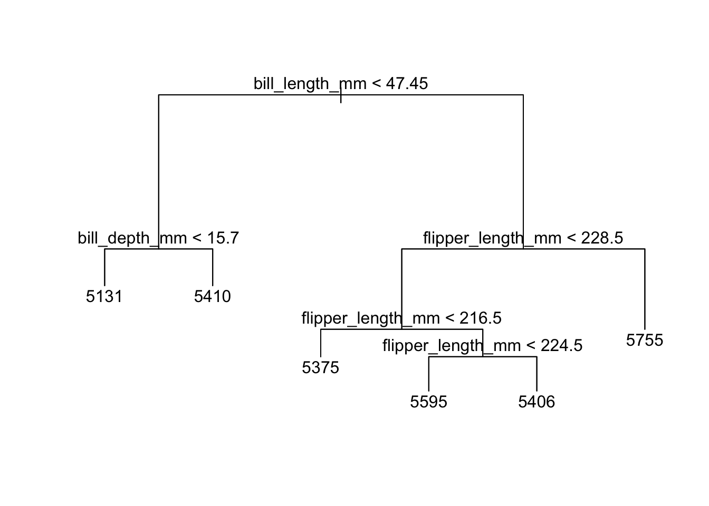
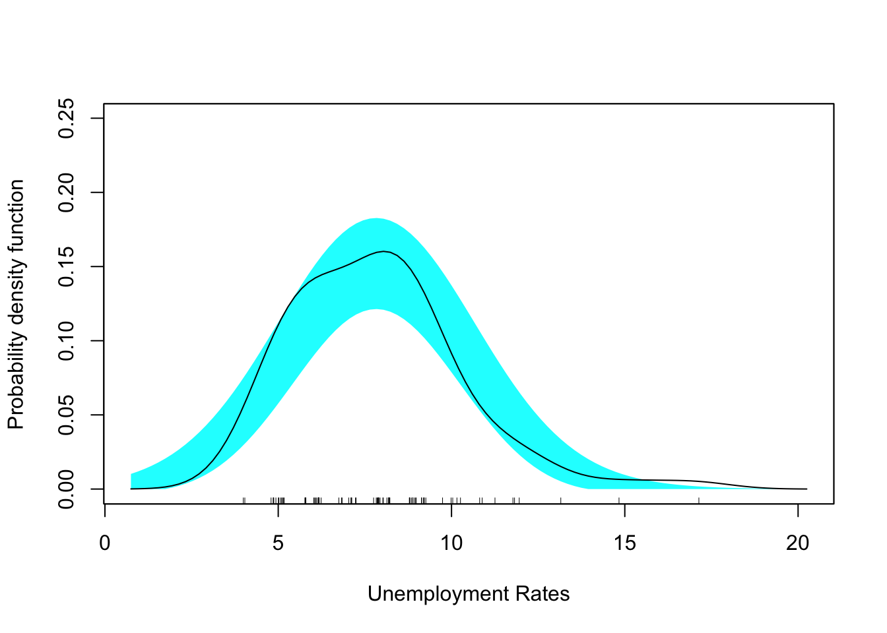
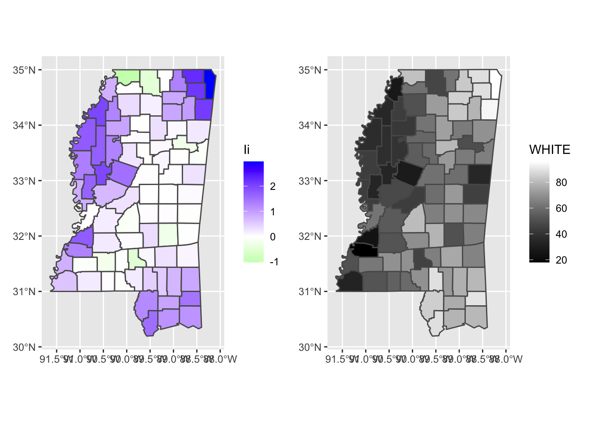

Tuesday, September 20, 2022
Today
- Comparing distributions
- Visualizing uncertainty
- Simple feature data frames
- Making a boundary map
Comparing distributions
Consider again the Florida rainfall data. Import the data and apply the missing value label to any value that is recorded as -9.900.
loc <- "http://myweb.fsu.edu/jelsner/temp/data/FLprecip.txt"
FLp.df <- readr::read_table(loc,
na = "-9.900")##
## ── Column specification ────────────────────────────────────────────────────────
## cols(
## Year = col_double(),
## Jan = col_double(),
## Feb = col_double(),
## Mar = col_double(),
## Apr = col_double(),
## May = col_double(),
## Jun = col_double(),
## Jul = col_double(),
## Aug = col_double(),
## Sep = col_double(),
## Oct = col_double(),
## Nov = col_double(),
## Dec = col_double()
## )Then use ggplot() and geom_histogram() functions to make a histogram of rainfall during March and add a label on the horizontal axis (x-axis). Here you assign the plot to an object called p1.
A list object is created in your environment, but nothing is plotted until you type the object name.
library(ggplot2)
p1 <- ggplot(data = FLp.df) +
geom_histogram(mapping = aes(x = Mar),
bins = 11,
fill = "green3",
col = "white") +
xlab("March Rainfall in Florida (in)")
p1
The histogram shows the shape of the distribution. The distribution contains all 118 years of March rainfall. Most years have rainfall values between 2 and 4 inches. A few years have values that exceed 7.5 inches.
The average, median, and standard deviations can be obtained using {dplyr} functions.
FLp.df |>
dplyr::select(Mar) |>
dplyr::summarize(avg = mean(Mar),
med = median(Mar),
sd = sd(Mar),
min = min(Mar),
max = max(Mar))## # A tibble: 1 × 5
## avg med sd min max
## <dbl> <dbl> <dbl> <dbl> <dbl>
## 1 3.66 3.35 1.95 0.496 8.70The average is larger than the median and the histogram is not symmetric. That is, the number of cases with with low rainfall exceeds the number of cases with heavy rainfall.
The histogram helps describe the statistical distribution of the values. Data from samples often form similar patterns. These patterns are known as ‘distributions’, because they describe how the data are ‘distributed’ across the range of possible values.
To see this you can generate values from various standard distributions and then make a histogram. These standard distributions are used in statistical analysis as reference distributions. This means that they allow researchers to compare data and groups of samples more easily.
For instance you generate values from a normal (Gaussian distribution) with the rnorm() function by specifying the mean (mean =) and the standard deviation (sd =). It is also known as the bell curve, because of its shape, and the Gaussian distribution after the mathematician Carl F Gauss, who first described it.
Here you do this using the mean and standard deviation from the rainfall values. Since there are 118 March rainfall values (one for each year) you set n = 118.
nd <- rnorm(n = 118,
mean = 3.65,
sd = 1.95)
nd## [1] 4.46605055 5.06390495 4.96230010 5.56020564 8.40585726 3.56353223
## [7] 3.70648413 3.90410861 4.98646540 4.07477130 6.72289460 2.95528683
## [13] 4.30071467 2.54055533 2.74475510 4.60297433 5.39444024 4.02550891
## [19] 3.77998944 5.75823770 1.51099497 4.30035832 2.02575249 0.40054164
## [25] 3.39571724 2.54399152 6.05595397 3.72123125 2.77994942 3.63695069
## [31] 1.40565498 2.54935235 3.32105821 6.12874764 1.41765499 4.43621796
## [37] 0.50473553 2.71922033 4.90628835 4.99125923 4.40826790 7.66385170
## [43] 4.49326187 -0.05083542 7.14046349 1.43924254 2.47345493 0.24333819
## [49] 3.99101210 5.64757230 4.85134232 5.34458679 -1.16445482 2.25615245
## [55] 5.22299392 4.07468083 0.52140306 3.24344142 0.05601952 3.76489091
## [61] 3.50193564 3.96314874 3.38342410 4.07320950 7.14348167 2.03368273
## [67] 4.52673464 4.35849310 4.96845149 7.27427479 4.00806367 1.64419039
## [73] 6.23006995 0.10706398 4.01923515 5.13204412 2.99742123 4.23175822
## [79] 4.18986388 3.79013087 4.80795094 4.66218847 8.99859200 4.28945534
## [85] 1.83023488 2.51897344 0.05979132 1.15857118 5.87786254 3.75728704
## [91] 1.38590721 2.66011150 5.17919933 5.56172281 3.13884609 4.09655354
## [97] 2.39208007 3.64124704 5.91084104 1.92020014 2.79904079 2.05148319
## [103] 2.47985102 1.84389126 6.30478657 3.93291082 3.95318543 5.45292177
## [109] 4.66472825 2.74289581 3.37985506 3.83782139 7.60240214 2.67527177
## [115] 3.08427532 8.06339492 7.35943058 3.02810973Collectively these values look quite a bit like the actual rainfall. Let’s make a histogram from these 118 values and assign it to p2.
df <- data.frame(nd)
p2 <- ggplot(data = df) +
geom_histogram(mapping = aes(x = nd),
bins = 11,
col = "white") +
xlab("Gaussian Distribution")
p2
Let’s do the same for a set of values from a uniform distribution and from a gamma distribution.
ud <- runif(n = 118,
min = .5,
max = 8.7)
p3 <- ggplot(data = df) +
geom_histogram(mapping = aes(x = ud),
bins = 11,
col = "white") +
xlab("Uniform Distribution")
gd <- rgamma(n = 118,
shape = 3.2,
rate = .9)
p4 <- ggplot(data = df) +
geom_histogram(mapping = aes(x = gd),
bins = 11,
col = "white") +
xlab("Gamma Distribution")Now put all four plots on a single graph. You do this with the {patchwork} package.
The package gives operators like + and / different meanings when applied to ggplot objects.
library(patchwork)
(p1 + p2) / (p3 + p4)
What distribution best matches the shape of the March rainfall values?
Standard distributions share a number of characteristics.
A clear mathematical definition. Their shape reflects just a few parameters, such as mean and standard deviation (for the normal distribution) or variance (for the chi-squared distribution).
Established theoretical properties. We know a lot about these distributions (for example, the normal curve is symmetrical).
They are good estimations for real data. In a sample of real-world data, it is impossible to get an exact normal distribution. However, these distributions are good approximations of real data.
A box plot graphically illustrates summary statistics. The summary statistics include the minimum value, the maximum value, the 1st & 3rd quartile values, and the median value.
Perhaps the most import scientific graph is the scatter plot which shows the relationship between two numeric variables. It plots the values of one variable against the values of the other as points \((x_i, y_i)\) in a Cartesian plane.
For example, to show the relationship between April and September values of rainfall you type
ggplot(FLp.df) +
geom_point(mapping = aes(x = Apr, y = Sep)) +
xlab("April Rainfall (in)") +
ylab("September Rainfall (in)")
The plot shows that dry Aprils tend to be followed by dry Septembers and wet Aprils tend to be followed by wet Septembers.
There is a direct (or positive) relationship between the two variables although the points are scattered widely indicating the relationship is loose.
If your goal is to model the relationship, you plot the dependent variable (the variable you are interested in modeling) on the vertical axis.
Here you put the September values on the vertical axis since a predictive model would use April values to predict September values because April comes before September in the calendar year.
If the points have a natural ordering then you use the geom_line() function. For example, to plot the September Rainfall values as a time series type
ggplot(FLp.df) +
geom_line(mapping = aes(x = Year, y = Sep)) +
xlab("Year") +
ylab("September Rainfall (in)")
Rainfall values fluctuate from one September to the next, but there does not appear to be a long-term trend. With time series data it is better to connect the values with lines rather than use points unless values are missing.
Create a plot of the May values of the North Atlantic oscillation (NAO) with Year on the horizontal axis. Add appropriate axis labels.
loc <- "http://myweb.fsu.edu/jelsner/temp/data/NAO.txt"
NAO.df <- readr::read_table(file = loc)
ggplot(NAO.df, aes(x = Year, y = May)) +
geom_line() +
xlab("Year") +
ylab("North Atlantic Oscillation (s.d.)")Let’s return to the mpg data frame. The data frame contains different automobiles by who made it, the model, engine size, mileage, class, etc.
names(mpg)## [1] "manufacturer" "model" "displ" "year" "cyl"
## [6] "trans" "drv" "cty" "hwy" "fl"
## [11] "class"Let’s start with a scatter plot showing highway mileage on the vertical axis and engine size on the horizontal axis.
ggplot(mpg) +
geom_point(mapping = aes(x = displ, y = hwy),
color = "blue")
You add a third variable, like class, to a two dimensional scatterplot by mapping it to an aesthetic. An aesthetic is a visual property of the objects in our plot. Aesthetics include things like the size, the shape, or the color of our points. You can display a point in different ways by changing the levels of its aesthetic properties (e.g., changing the level by size, color, type).
For example, you map the colors of our points to the class variable to reveal the class of each car.
ggplot(data = mpg) +
geom_point(mapping = aes(x = displ,
y = hwy,
color = class))
To map an aesthetic to a variable, associate the name of the aesthetic to the name of the variable inside aes(). Note in the previous plot color = was specified outside aes().
ggplot() will automatically assign a unique level of the aesthetic (here a unique color) to each unique value of the variable, a process known as scaling. ggplot() will also add a legend that explains which levels correspond to which values.
The colors show that many of the unusual points are two-seater cars. Sports cars have large engines like SUVs and pickup trucks, but small bodies like midsize and compact cars, which improves their gas mileage.
One way to add additional variables is with aesthetics. Another way, particularly useful for categorical variables, is to split the plot into facets, subplots that each display one subset of the data.
To facet a plot by a single variable, use facet_wrap(). The first argument of facet_wrap() should be a formula, which you create with ~ (tilde) followed by a variable name (here ‘formula’ is the name of a data structure in R, not a synonym for ‘equation’). The variable that you pass to facet_wrap() should be discrete.
ggplot(data = mpg) +
geom_point(mapping = aes(x = displ, y = hwy)) +
facet_wrap(~ class, nrow = 2)
To facet a plot on the combination of two variables, add facet_grid() to the plot call. The first argument of facet_grid() is also a formula. This time the formula should contain two variable names separated by a ~ with the first variable named varying in the vertical direction and the second varying in the horizontal direction.
ggplot(data = mpg) +
geom_point(mapping = aes(x = displ, y = hwy)) +
facet_grid(drv ~ cyl)
Here drv refers to the drive train: front-wheel (f), rear-wheel (r) or 4-wheel (4).
Example: Palmer penguins
Let’s return to the penguins data set. You import it as a data frame using readr::read_csv() function.
loc <- "https://raw.githubusercontent.com/allisonhorst/palmerpenguins/master/inst/extdata/penguins.csv"
penguins <- readr::read_csv(loc)## Rows: 344 Columns: 8
## ── Column specification ────────────────────────────────────────────────────────
## Delimiter: ","
## chr (3): species, island, sex
## dbl (5): bill_length_mm, bill_depth_mm, flipper_length_mm, body_mass_g, year
##
## ℹ Use `spec()` to retrieve the full column specification for this data.
## ℹ Specify the column types or set `show_col_types = FALSE` to quiet this message.head(penguins)## # A tibble: 6 × 8
## species island bill_length_mm bill_depth_mm flipper_l…¹ body_…² sex year
## <chr> <chr> <dbl> <dbl> <dbl> <dbl> <chr> <dbl>
## 1 Adelie Torgersen 39.1 18.7 181 3750 male 2007
## 2 Adelie Torgersen 39.5 17.4 186 3800 fema… 2007
## 3 Adelie Torgersen 40.3 18 195 3250 fema… 2007
## 4 Adelie Torgersen NA NA NA NA <NA> 2007
## 5 Adelie Torgersen 36.7 19.3 193 3450 fema… 2007
## 6 Adelie Torgersen 39.3 20.6 190 3650 male 2007
## # … with abbreviated variable names ¹flipper_length_mm, ²body_mass_gHere you will visualize the relationship between flipper_length_mm and body_mass_g with respect to each species.
https://towardsdatascience.com/penguins-dataset-overview-iris-alternative-9453bb8c8d95
Start by creating a scatter plot with flipper length on the horizontal axis and body mass on the vertical axis.
ggplot(data = penguins) +
geom_point(aes(x = flipper_length_mm, y = body_mass_g))## Warning: Removed 2 rows containing missing values (geom_point).
Next, make the color and shape of the points correspond to the species type. Use the colors “darkorange”, “purple”, “cyan4”.
ggplot(data = penguins) +
geom_point(aes(x = flipper_length_mm,
y = body_mass_g,
color = species,
shape = species)) +
scale_color_manual(values = c("darkorange", "purple", "cyan4"))## Warning: Removed 2 rows containing missing values (geom_point).
Finally, separate the scatter plots by island.
ggplot(data = penguins) +
geom_point(aes(x = flipper_length_mm,
y = body_mass_g,
color = species,
shape = species)) +
scale_color_manual(values = c("darkorange", "purple", "cyan4")) +
facet_wrap(~ island)## Warning: Removed 2 rows containing missing values (geom_point).
An expository graph
Adding labels and titles turns an exploratory graph into an expository graph. Consider again the mpg dataset and plot highway mileage (hwy) as a function of engine size (displ) with the color of the point layer given by automobile class (class).
ggplot(data = mpg,
mapping = aes(x = displ, y = hwy)) +
geom_point(aes(color = class)) +
geom_smooth(se = FALSE) +
labs(title = "Fuel efficiency generally decreases with engine size")## `geom_smooth()` using method = 'loess' and formula 'y ~ x'
The graph title should summarize the main finding. Avoid titles that just describe what the plot is, e.g. “A scatter plot of engine displacement vs. fuel economy”. If you need to add more text use subtitles and captions.
subtitle =adds additional detail in a smaller font beneath the title.caption =adds text at the bottom right of the plot, often used to describe the source of the data.
ggplot(data = mpg,
mapping = aes(x = displ, y = hwy)) +
geom_point(mapping = aes(color = class)) +
geom_smooth(se = FALSE) +
labs(title = "Fuel efficiency generally decreases with engine size",
subtitle = "Two seaters (sports cars) are an exception because of their light weight",
caption = "Data are from fueleconomy.gov")## `geom_smooth()` using method = 'loess' and formula 'y ~ x'
Exporting your graph
When you knit to HTML and a plot is produced it gets output as a png file in our project directory.
You can use the Export button under the Plots tab.
Or you can export the file directly using R code. Here the file gets put into our working directory.
png(file = "Test.png")
p1
dev.off()Note that the function png() opens the device and the function dev.off() closes it.
You list the files in your working directory with the command dir().
Visualizing uncertainty
The {ggdist} package provides a flexible set of {ggplot2} geoms and stats designed for visualizing distributions and uncertainty.
The functions are designed for frequentist and Bayesian uncertainty visualization, taking the view that uncertainty visualization can be unified through the perspective of distribution visualization.
With frequentist models you visualize confidence distributions or bootstrap distributions. For Bayesian models, you visualize probability distributions.
As one example, consider again the Palmer penguins. Here you filter to keep only the Chinstrap penguins.
( Chinstrap.df <- penguins |>
dplyr::filter(species == "Chinstrap") )## # A tibble: 68 × 8
## species island bill_length_mm bill_depth_mm flipper_l…¹ body_…² sex year
## <chr> <chr> <dbl> <dbl> <dbl> <dbl> <chr> <dbl>
## 1 Chinstrap Dream 46.5 17.9 192 3500 fema… 2007
## 2 Chinstrap Dream 50 19.5 196 3900 male 2007
## 3 Chinstrap Dream 51.3 19.2 193 3650 male 2007
## 4 Chinstrap Dream 45.4 18.7 188 3525 fema… 2007
## 5 Chinstrap Dream 52.7 19.8 197 3725 male 2007
## 6 Chinstrap Dream 45.2 17.8 198 3950 fema… 2007
## 7 Chinstrap Dream 46.1 18.2 178 3250 fema… 2007
## 8 Chinstrap Dream 51.3 18.2 197 3750 male 2007
## 9 Chinstrap Dream 46 18.9 195 4150 fema… 2007
## 10 Chinstrap Dream 51.3 19.9 198 3700 male 2007
## # … with 58 more rows, and abbreviated variable names ¹flipper_length_mm,
## # ²body_mass_g
## # ℹ Use `print(n = ...)` to see more rowsYou compute the average and standard deviation of body mass conditional on sex.
Chinstrap.df |>
dplyr::group_by(sex) |>
dplyr::summarise(avg = mean(body_mass_g),
sd = sd(body_mass_g))## # A tibble: 2 × 3
## sex avg sd
## <chr> <dbl> <dbl>
## 1 female 3527. 285.
## 2 male 3939. 362.On average male penguins are heavier but there is some variation. There is more variation among the males than among the females.
While useful, these statistics do not give information about the shape of the distribution and how those shapes compare in distributional space.
A plot showing the body mass values conditional on sex is a good start. Here you first remove cases where the sex of the penguin is missing and then plot the body mass variable along the horizontal axis using a point layer with a transparency (alpha) level set to .5.
Chinstrap.df |>
ggplot(mapping = aes(y = sex, x = body_mass_g)) +
geom_point(alpha = .5) 
The plot shows that some of the heaviest penguins are male and some of the lightest penguins are female there is considerable overlap in the values.
To make the visualization even more informative you can use functions from the {ggdist} package. Here you substitute the ggdist::stat_halfeye() for geom_point().
Chinstrap.df |>
ggplot(mapping = aes(y = sex, x = body_mass_g)) +
ggdist::stat_halfeye()
The result is a plot showing the location of the respective average values (black dot) along with the 66th (thick line) and 95th percentile intervals (thin line).
Also displayed are the density plots in gray.
Another example showing quantile intervals.
Chinstrap.df |>
ggplot(mapping = aes(y = sex, x = body_mass_g)) +
ggdist::stat_interval()
The half intervals (.5) do not overlap.
More information on using functions from the {ggdist} package for visualizing uncertainty is available from https://mjskay.github.io/ggdist/
Simple feature data frames
Geographic visualization of data is important to geographers and environmental scientists. There are many tools for geo visualization from full-scale GIS applications such as ArcGIS and QGIS to web-based tools like Google maps.
Using code to make maps (instead of point and click) has the benefit of transparency and reproducibility.
Simple features (simple feature access) refers to a standard that describes how objects in the real world are represented in computers. Emphasis is on the spatial geometry of the objects.
The standard also describes how such objects are stored in and retrieved from databases, and which geometrical operations are defined for them.
The simple feature standard is implemented in spatial databases (such as PostGIS), commercial GIS (e.g., ESRI ArcGIS). R has an implementation in the {sf} package.
One type of spatial data file is called a shapefile. As an example, the U.S. census information at the state and territory level in a file called cb_2018_us_state_5m.shp. https://www.census.gov/geographies/mapping-files/time-series/geo/carto-boundary-file.html
A shapefile encodes points, lines, and polygons in geographic space, and is actually a set of files. Shapefiles appear with a .shp extension and with accompanying files ending in .dbf and .prj.
.shpstores the geographic coordinates of the geographic features (e.g. country, state, county).dbfstores data associated with the geographic features (e.g. unemployment rates).prjstores information about the projection of the coordinates in the shapefile
To get a shapefile into R all the files need to be in the same folder (directory).
As an example, you import the census data with the sf::st_read() function from the {sf} package. You assign to the object USA.sf the contents of the spatial data frame.
USA.sf <- sf::st_read(dsn = here::here("data", "cb_2018_us_state_5m"))## Reading layer `cb_2018_us_state_5m' from data source
## `/Users/jameselsner/Desktop/ClassNotes/QG-2022/data/cb_2018_us_state_5m'
## using driver `ESRI Shapefile'
## Simple feature collection with 56 features and 9 fields
## Geometry type: MULTIPOLYGON
## Dimension: XY
## Bounding box: xmin: -179.1473 ymin: -14.55255 xmax: 179.7785 ymax: 71.35256
## Geodetic CRS: NAD83The output includes information about the file. The object shows up in your environment as a data frame with 56 observations and 10 variables.
Each observation is either a state or territory.
The class() function tells you the type of data frame and the names() function list the variable names.
class(USA.sf)## [1] "sf" "data.frame"names(USA.sf)## [1] "STATEFP" "STATENS" "AFFGEOID" "GEOID" "STUSPS" "NAME"
## [7] "LSAD" "ALAND" "AWATER" "geometry"The file is a simple feature (sf) data frame (data.frame). This means it behaves like a data frame but it also contains information about where the observations are located.
The first several columns serve as identifiers. The variable ALAND is the land area (square meters) and the AWATER is the water area (sq. m).
The last column labeled geometry contains information about location stored as a ‘feature’. The function sf::st_geometry() list the first 5 geometries.
sf::st_geometry(USA.sf)## Geometry set for 56 features
## Geometry type: MULTIPOLYGON
## Dimension: XY
## Bounding box: xmin: -179.1473 ymin: -14.55255 xmax: 179.7785 ymax: 71.35256
## Geodetic CRS: NAD83
## First 5 geometries:## MULTIPOLYGON (((-104.0535 41.15726, -104.0527 4...## MULTIPOLYGON (((-122.3283 48.02134, -122.3217 4...## MULTIPOLYGON (((-109.0502 31.48, -109.0498 31.4...## MULTIPOLYGON (((-104.0577 44.99743, -104.0502 4...## MULTIPOLYGON (((-106.6455 31.89867, -106.6408 3...The geometry type in this case is MULTIPOLYGON.
A feature is an object in the real world. Often features will consist of a set of features. For instance, a tree is a feature but a set of trees in a forest is itself a feature. The trees are represented as points while the forest boundary as a polygon.
Features have a geometry describing where on Earth the feature is located. They also have attributes, which describe other properties of the feature.
Making a boundary map
The functions in the {ggplot2} package work with simple feature data frames to generate maps using the same grammar.
The important function is geom_sf(). This function draws the geometries.
For example, to draw a map showing the state and territorial boundaries first use ggplot() with the data argument specifying the simple feature data frame USA.sf and then add the geom_sf() function as a layer with the + symbol.
library(ggplot2)
ggplot(data = USA.sf) +
geom_sf()
Note: you don’t need the mapping = aes() function. The mapping is assumed based on the fact that there is a geometry column in the simple feature data frame.
The geom_sf() function maps the east-west coordinate to the x aesthetic and the north-south coordinate to the y aesthetic.
The map is not very informative. Let’s zoom into the contiguous states.
What states/territories are there in the data frame USA.sf?
USA.sf$NAME## [1] "Nebraska"
## [2] "Washington"
## [3] "New Mexico"
## [4] "South Dakota"
## [5] "Texas"
## [6] "California"
## [7] "Kentucky"
## [8] "Ohio"
## [9] "Alabama"
## [10] "Georgia"
## [11] "Wisconsin"
## [12] "Oregon"
## [13] "Pennsylvania"
## [14] "Mississippi"
## [15] "Missouri"
## [16] "North Carolina"
## [17] "Oklahoma"
## [18] "West Virginia"
## [19] "New York"
## [20] "Indiana"
## [21] "Kansas"
## [22] "Idaho"
## [23] "Nevada"
## [24] "Vermont"
## [25] "Montana"
## [26] "Minnesota"
## [27] "North Dakota"
## [28] "Hawaii"
## [29] "Arizona"
## [30] "Delaware"
## [31] "Rhode Island"
## [32] "Colorado"
## [33] "Utah"
## [34] "Virginia"
## [35] "Wyoming"
## [36] "Louisiana"
## [37] "Michigan"
## [38] "Massachusetts"
## [39] "Florida"
## [40] "United States Virgin Islands"
## [41] "Connecticut"
## [42] "New Jersey"
## [43] "Maryland"
## [44] "South Carolina"
## [45] "Maine"
## [46] "New Hampshire"
## [47] "District of Columbia"
## [48] "Guam"
## [49] "Commonwealth of the Northern Mariana Islands"
## [50] "American Samoa"
## [51] "Iowa"
## [52] "Puerto Rico"
## [53] "Arkansas"
## [54] "Tennessee"
## [55] "Illinois"
## [56] "Alaska"To zoom in you keep only rows corresponding to states (in the lower 48) from the simple feature data frame.
Recall to pick out rows in a data frame you use the dplyr::filter() function from the {dplyr} package.
First you need to get a list of all the states you want to keep. The state.name vector object contains all 50 state names. This is like the month.abb vector you saw earlier.
state.name## [1] "Alabama" "Alaska" "Arizona" "Arkansas"
## [5] "California" "Colorado" "Connecticut" "Delaware"
## [9] "Florida" "Georgia" "Hawaii" "Idaho"
## [13] "Illinois" "Indiana" "Iowa" "Kansas"
## [17] "Kentucky" "Louisiana" "Maine" "Maryland"
## [21] "Massachusetts" "Michigan" "Minnesota" "Mississippi"
## [25] "Missouri" "Montana" "Nebraska" "Nevada"
## [29] "New Hampshire" "New Jersey" "New Mexico" "New York"
## [33] "North Carolina" "North Dakota" "Ohio" "Oklahoma"
## [37] "Oregon" "Pennsylvania" "Rhode Island" "South Carolina"
## [41] "South Dakota" "Tennessee" "Texas" "Utah"
## [45] "Vermont" "Virginia" "Washington" "West Virginia"
## [49] "Wisconsin" "Wyoming"Let’s remove the rows corresponding to the names "Alaska" and "Hawaii". These are elements 2 and 11 so you create a new vector object called sn containing only the names of the lower 48.
sn <- state.name[c(-2, -11)]
sn## [1] "Alabama" "Arizona" "Arkansas" "California"
## [5] "Colorado" "Connecticut" "Delaware" "Florida"
## [9] "Georgia" "Idaho" "Illinois" "Indiana"
## [13] "Iowa" "Kansas" "Kentucky" "Louisiana"
## [17] "Maine" "Maryland" "Massachusetts" "Michigan"
## [21] "Minnesota" "Mississippi" "Missouri" "Montana"
## [25] "Nebraska" "Nevada" "New Hampshire" "New Jersey"
## [29] "New Mexico" "New York" "North Carolina" "North Dakota"
## [33] "Ohio" "Oklahoma" "Oregon" "Pennsylvania"
## [37] "Rhode Island" "South Carolina" "South Dakota" "Tennessee"
## [41] "Texas" "Utah" "Vermont" "Virginia"
## [45] "Washington" "West Virginia" "Wisconsin" "Wyoming"Now you filter the USA.sf data frame keeping only the rows that are listed in the vector of state names. Assign this spatial data frame the name USA_48.sf.
USA_48.sf <- USA.sf |>
dplyr::filter(NAME %in% sn)The function %in% finds only the rows in USA.sf with NAME equal to the names in the vector sn and the dplyr::filter() function chooses these rows.
Now redraw the map using the USA_48.sf simple feature data frame.
ggplot(data = USA_48.sf) +
geom_sf()
Since the map is a ggplot() object, it is modified like any other ggplot() graph. For example, you change the color of the map and the borders as follows.
ggplot(data = USA_48.sf) +
geom_sf(fill = "skyblue",
color = "gray70")
You can filter by state. Here you create a new simple feature data frame called Wisconsin.sf then draw the boundary.
Wisconsin.sf <- USA_48.sf |>
dplyr::filter(NAME == "Wisconsin")
ggplot(data = Wisconsin.sf) +
geom_sf(fill = "palegreen",
color = "black")
Where is the state of Nebraska? Repeat but fill in Nebraska using the color brown.
Nebraska.sf <- USA_48.sf |>
dplyr::filter(NAME == "Nebraska")
ggplot(data = USA_48.sf) +
geom_sf() +
geom_sf(data = Nebraska.sf,
fill = "brown")
You add layers with the + symbol as before.
Boundaries serve as the background canvas for spatial data analysis. You usually need to add data to this canvas. Depending on the type of data, you either overlay it on top of the boundaries or use it to fill in the areas between the boundaries.